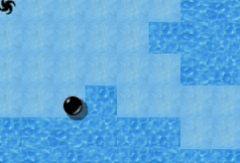
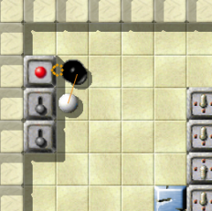

Level des MonatsJeden Monat werfen wir einen näheren Blick auf einen herausragenden Level. Herausragende Levels sind dabei solche, die sich durch die höchsten Bewertungen durch die Spieler auszeichnen, und dabei zugleich von genügend vielen Spielern auch bewertet wurden. Es ist also Ihre Wahl, die den Level des Monats bestimmt. Bitte werten Sie Levels, nachdem Sie sie gespielt haben, und vergessen Sie nicht, die Wertungen zusammen mit Ihren Spielergebnissen zum Ende eines jeden Monats uns zuzusenden. Sie können alle vorigen Level des Monats in unserem Archiv finden. April 2008: „The Three Clouds“ von Kate LeverDiesen Monat wollen wir einen jener großen Levels in Enigma ehren, der völlig neue Grenzen in Leveldesign und Rätselmustern gesetzt hat, der einen Einfluss ähnlicher Größenordnung besitzt wie „Island Labyrinth“ fürs Gameplay, „The Aztec Temple“ fürs Design oder „Houdini“ für die Originalität. Dennoch ist dieser vollgepackte und atmosphärisch dichte Level begleitet von einem frischen und luftigen Look-and-Feel, der von seiner einzigartigen Farbkombination und seinem Handlungsfaden herrührt. Heißen wir ihn willkommen, den Level des Monats April 2008: „The Three Clouds“! 
Enigma VII # 25 - The Three Clouds
„The Three Clouds“ war ursprünglich am Ende von Enigmapack VII platziert, wurde aber während den hastigen Vorbereitungen für Enigma 1.01 durch eine falsche Zählung der Gesamtlevelzahl vergessen. Dennoch wurde er von sovielen Spielern manuell aus der Entwicklerversion extrahiert, dass wir einfach nicht bemerkt haben, dass er fehlte; wir waren sogar in der Lage, eine Spielerwertung für ihn zu berechnen. Wir waren geschockt, als wir feststellen mussten, dass er fehlt. Ironischerweise geschah dies während wir diesen Artikel schreiben wollten und einige Spieler nach Kommentaren gefragt hatten. Auf diese Weise wollen wir uns nun für alle Unannehmlichkeiten entschuldigen, Sie können diesen fantastischen Level nun hier herunterladen. Speichern Sie einfach die zip-Datei in Ihrem „USERPFAD/levels“ Verzeichnis (dann befindet er sich im Pack „Enigma VII++“), oder entpacken und bewegen Sie ihn in Ihr „USERPFAD/levels/auto“ Verzeichnis, wie hier beschrieben. „Ich tauchte immer tiefer in seine pathetische Welt ein, je öfter ich ihn spielte“
Als ich „The Three Clouds“ das erste Mal sah, dachte ich 'was für ein
Müll, ist dieses Labyrinth alles, was ich kriege?', drückte 'F4' und bemerkte,
dass dies der letzte Level im Pack war. Ich fing an, ein paar Levels aus Pack
VI und VII zu spielen, und nach vielleicht zwei Monaten kam ich zurück zu
„Three Clouds“ und dachte irgendwie 'da muss mehr sein'. Ich rollte
durch den Level, entlang der Küsten der drei Inseln, und tauchte immer tiefer
in seine pathetische Welt und himmlische Design ein, je öfter ich ihn spielte.
Ich bewundere besonders das fantastische Farbdesign dieses Levels. Diese
Kombination von hellblau und feinfühligem Blau ist die zweitschönste Sache, die
ich je in Enigma's Welt gesehen habe. Ich kann stundenlang diesen
herrlichen Anblick genießen und den Rest der Welt vergessen, einschließlich
Maus und Murmel.
Was ich an diesem Level am meisten liebe ist seine Stille, seine statische
Stille. Es gibt keinen Grund zur Hetze, man kann alles zu jeder Zeit sehen und
den nächsten Schritt mit Bedacht planen. Es ist wie eingefroren in der Zeit,
und zieht einen in seine actionfreie Welt hochverschiedener Rätsel.

Ruhig mal einen Schuss
ins Blaue wagen … Nachdem man durch den ersten Irrgarten übel grinsender Ritter gehechtet ist, erreicht man bald das erste echte Rätsel in diesem gewaltigen Level. Er schenkt einem einen völlig neuen Eindruck über die Benutzung von Lasern, um Turnstiles und Samen zu bedienen. Die Zeit läuft, während man die wachsenden Blöcke in den T-förmigen Abgrund auf der linken Seite schieben muss, aber obwohl die Zeit drängt, fühlt man sich während des Spieles überhaupt nicht unter Zeitnot, das Rätsel löst sich auf eine seltsame, nicht einfach zu beschreibende Weise von selbst. Natürlich muss man es ein paar Mal versuchen. Zuvor „The Sargasso Sea“ zu spielen, kann Ihnen dabei helfen, sich auf diesen Teil des Levels vorzubereiten. Nachdem man den lebhaft grünen Abschnitt in „The Three Clouds“ verlässt, steht man schließlich vor der Küstenlinie der ersten 'Ebene' in diesem Level, auf Meereshöhe und mit drei Wurmlöchern vor sich. Die zuvor gesammelten Hinweise sind nun von besonderer Bedeutung, da zwei der Wurmlöcher nichts weiter sind als Fallen. Ziemlich gemeine Fallen, da sie lediglich einen einzelnen Stein im späteren Fünf-Stern-Rätsel entfernen, und es dadurch unlösbar machen. „Ich war sogar ein wenig böse darüber, dass dieser Level völlig okay war“Das nächste, was man sieht, ist der Eis-Ozean der zweiten Ebene, der Geschicklichkeitspart in dieser Landschaft.

Das Eisfeld
Ich sah „The Three Clouds“ das erste Mal als Screenshot bei einem
Freund, der ebenfalls Enigma spielt. Er sagte, er verwendet eine
Entwicklerversion, und gab mir eine Kopie dieses Levels. Ich war erstaunt, als
ich ihn sah, aber unsicher, ob es okay war, weil ich dachte, es hätte wohl
einen Grund, warum die Programmierer ihn aus der Distribution entfernt hatten.
Ich habe ihn dennoch gespielt, und bin ihm verfallen, und war sogar ein wenig
böse darüber, dass dieser Level völlig okay war. Ich dachte, die Programmierer
hätten ihn vor mir versteckt. Heute weiß ich's besser. :-)
Ich mag die Idee mehrerer Ebenen in einem Level. Dieser hier nutzt das
reichlich, und die zweite und vierte Ebene sind meine liebsten! Oh, sie
erinnert mich so sehr an meine ersten Versuche auf Eis, ich möchte heulen. Ich
glitt ein paar Zoll, landete auf dem Eis, stellte mich zurück auf meine
Schlittschuhe, glitt ein paar Zoll, … immer wieder aufstehen, niemals
aufgeben. Mann, das waren Zeiten.
Tatsächlich ist die weiße Flagge später erst zum Level hinzugefügt worden, als wir bemerkten, dass es ohne zu schwierig würde.
Und dann das Rätsel im letzten, vierten Stock: Bewegliche Totenkopfsteine mit
it-umbrella anordnen, gerade so in der Zeit, um die weiße Murmel und den Rotor
sicher durch den neu geschaffenen Irrgarten zu führen. Ich muss dabei immer an
ein anderes Spiel aus meiner Jugend denken, „Praztor II“ für den C64.
Vielen Dank, dass Ihr diese Erinnerung wiedererweckt habt!
Alles in allem denke ich, dass „The Three Clouds“ einer der
Top-Ten-Levels in Enigma ist. Vielen Dank an Euch, macht weiter so!
Während man durch den zweiten Irrgarten rollt, entlang jener sich ewig-wandelnden Mauern aus Rotator-Steinen, wird die Dynamik dieses wundervoll aktiven Levels ein weiteres Mal offensichtlich. Den nächsten der dreizehn akkurat angeordneten Schalter zu erreichen, unterteilt den Level in kleinere Einheiten, und bietet stets eine kurze Pause in den Rennen, die seine Rätsel verlangen.

„Lass uns hier verschwinden …“
Das originellste Rätsel überhaupt ist sicherlich die absolut unerwartete Wendung in Bezug auf it-booze und st-oneway. Obwohl wir hier nicht zuviel verraten wollen, gebe ich dennoch einen kleinen Hinweis: Achten Sie auf das Gummiband! ;-) „Ich mag die Zahl neun sehr“Der letzte Rätsel-Irrgarten auf der engen, fünften Ebene greift schließlich all die Ideen wieder auf, die zu Zeiten im Level in der Luft lagen, und erfordert alle neun Werkzeuge, die man während dem Spiel sammeln sollte (Stellen Sie sicher, dass Sie den Schlüssel nicht vergessen, er ist von großer Bedeutung, nachdem man das Spiegelgebiet verlässt, und man kann nicht einfach mittels der Feder zurück). Hier sind Kates Gedanken über ihren Level und diesen sehr besonderen Teil von ihm:
Die ursprüngliche Idee zu „The Three Clouds“ entstand aus einem
Traum, den ich im November 2006 hatte. Es war ein ziemlich aufwühlender Traum,
Holz- und Totenkopfsteine überall, und ich dazwischen, versuchte meinen Weg
freizuräumen. Tatsächlich war das die Inspiration für den Totenkopf-Irrgarten,
der erste Teil, den ich für diesen Level geschrieben hatte. Leider kamen mir
keine weiteren Träume zu Hilfe, um den Rest des Levels zu entwerfen, aber ich
wurde bald während eines Fluges von Seattle nach Miami dazu inspiriert und
schrieb die meisten verbleibenden Rätsel im Laufe der nächsten zwei Tage.
Ich bin jedoch noch immer nicht mit jedem Aspekt des Levels zufrieden. Ich hbe
lange mit mir gekämpft, ob ich den Schlüssel im letzten Rätsel nutzen sollte.
Letztlich habe ich mich dazu durchgerungen, insbesondere um die Gesamtzahl von
neun Werkzeugen zu erhalten. Ich mag die Zahl neun sehr, es ist meine
Glückszahl, und ich hofe meinen Level in Enigma 1.1 auf Position VII/99 zu
sehen.
Ich war bereits wieder mit anderen Dingen beschäftigt, als Daydreamer (zwei
Monate nachdem ich die 'letzte' Version von „The Three Clouds“
übermittelt hatte) schließlich auf eine Abkürzung im Fünf-Stern-Rätsel hinwies.
Er benutzte einen übrig gebliebenen it-umbrella, um durch das Feuer zum
Viererschalter zu kommen, der eigentlich nur als regulatives Element in dem
Level gedacht war, nicht dazu, manipuliert zu werden. Dies war einerseits der
Grund für den zweiten Viererschalter auf dieser Ebene, aber auch das
Kernelement für das neue kleine Sokobanpuzzle, das dem Fünf-Stern-Rätsel folgt.
Ich bin froh, dass ich Euch mit einem Level helfen konnte, und freue mich, dass
er von den Spielern als lohnende Ergänzung zu diesem ansonsten großartigen
Spiel akzeptiert wurde. Vielen Dank, dass Ihr mir erlaubt habt, ein Teil davon
zu sein.
Und vielen Dank an Dich, Kate, für dieses ausgesprochen inspiriende Puzzleteil in unserem Puzzle der größten Levels in Enigma, und für die Art, mit der Du uns durch ihn lächeln lässt! Beste Grüße, |